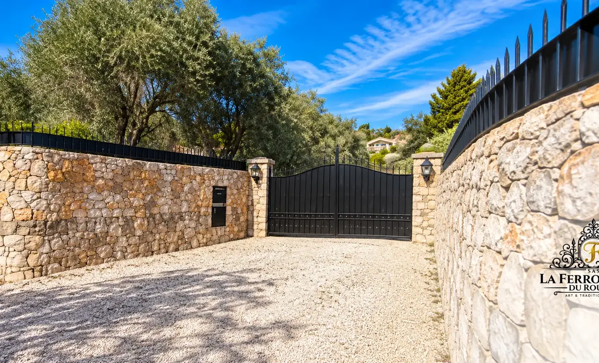
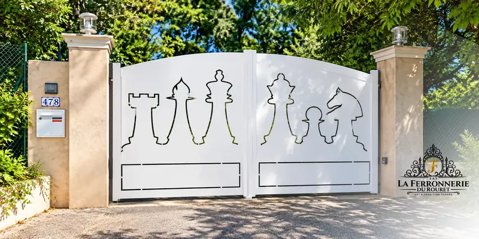
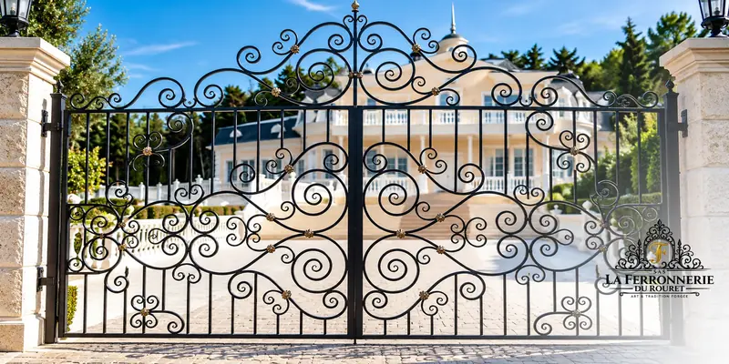

La largeur d'un portail se mesure entre les deux piliers. Pour le passage d'une voiture, on compte en général au moins 3 mètres, et plutôt 3,50 à 4 mètres si l'allée impose un virage ou si vous recevez des véhicules plus larges. Un portail trop étroit complique chaque manœuvre : mieux vaut prévoir un peu plus large dès le départ.
La hauteur dépend du niveau d'intimité souhaité et des règles d'urbanisme de votre commune, souvent précisées dans le plan local d'urbanisme. Elle doit aussi rester cohérente avec la clôture. Les piliers doivent être solides et d'aplomb, car ils portent tout le poids du portail. Enfin, un terrain en pente vers l'intérieur peut empêcher l'ouverture d'un portail battant : il faut alors adapter le dessin ou choisir un coulissant.
C'est pourquoi nous prenons toujours les mesures nous-mêmes, sur place. Quelques centimètres d'écart suffisent à compromettre un ajustement.


Un relevé précis garantit un portail qui s'ouvre et se ferme parfaitement pendant des années.
Pensez à l'avenir au moment de fixer les dimensions. Un véhicule plus grand, une remorque ou un camping-car peuvent un jour passer par votre entrée. Gagner cinquante centimètres de largeur au moment de la fabrication est simple, alors qu'agrandir une ouverture existante demande de reprendre les piliers. Un portail bien dimensionné reste pratique pendant des décennies.